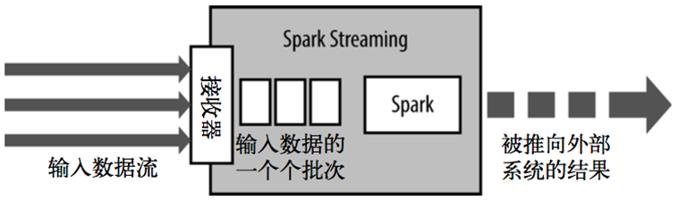

来自：
美团点评 spark性能优化指南-基础篇
美团点评 spark性能优化指南-高级篇
spark本身并没有提供分布式文件系统，因此spark的分析大多依赖于Hadoop的分布式文件系统HDFS.
Hadoop的Mapreduce与spark都可以进行数据计算，而相比于Mapreduce，spark的速度更快并且提供的功能更加丰富.
spark在没有shuffle时比hadoop快，因为不用中间落地，但在有shuffle时，效率一样。
Spark相对与MapReduce的优势有：低延迟、支持DAG和分布式内存计算。
提交作业流程

spark-submit提交一个Spark作业之后，这个作业就会启动一个对应的Driver进程。
根据你使用的部署模式（deploy-mode）不同，Driver进程可能在本地启动，也可能在集群中某个工作节点上启动。
Driver进程本身会根据我们设置的参数，占有一定数量的内存和CPU core。
Driver进程要做的第一件事情，就是向集群管理器（可以是Spark Standalone集群，也可以是其他的资源管理集群，美团•大众点评使用的是YARN作为资源管理集群）申请运行Spark作业需要使用的资源，这里的资源指的就是Executor进程。
YARN集群管理器会根据我们为Spark作业设置的资源参数，在各个工作节点上，启动一定数量的Executor进程，每个Executor进程都占有一定数量的内存和CPU core。
在申请到了作业执行所需的资源之后，Driver进程就会开始调度和执行我们编写的作业代码了：
Driver进程会将我们编写的Spark作业代码分拆为多个stage，
每个stage执行一部分代码片段，并为每个stage创建一批task，
然后将这些task分配到各个Executor进程中执行。task是最小的计算单元，负责执行一模一样的计算逻辑（也就是我们自己编写的某个代码片段），只是每个task处理的数据不同而已。
一个stage的所有task都执行完毕之后，会在各个节点本地的磁盘文件中写入计算中间结果，
然后Driver就会调度运行下一个stage。下一个stage的task的输入数据就是上一个stage输出的中间结果。
如此循环往复，直到将我们自己编写的代码逻辑全部执行完，并且计算完所有的数据，得到我们想要的结果为止。
一个作业 —> 多个stage 通过shuffle划分
一个stage —> 执行部分代码
一个stage —> 多个task 每个task执行相同逻辑代码，处理数据不同。
一个stage的所有task都执行完毕之后，会在各个节点本地的磁盘文件中写入计算中间结果，然后Driver就会调度运行下一个stage。下一个stage的task的输入数据就是上一个stage输出的中间结果。如此循环往复，直到将我们自己编写的代码逻辑全部执行完，并且计算完所有的数据，得到我们想要的结果为止
Spark是根据shuffle类算子来进行stage的划分。如果我们的代码中执行了某个shuffle类算子（比如reduceByKey、join等），那么就会在该算子处，划分出一个stage界限来。
shuffle算子执行之前的代码会被划分为一个stage，shuffle算子执行以及之后的代码会被划分为下一个stage。因此一个stage刚开始执行的时候，它的每个task可能都会从上一个stage的task所在的节点，去通过网络传输拉取需要自己处理的所有key，然后对拉取到的所有相同的key使用我们自己编写的算子函数执行聚合操作（比如reduceByKey()算子接收的函数）。
（注：hadoop只有一种shuffle，Spark有两种，hash和sort。Spark1.6之前用hash shuffle，在spark1.6之后使用sort shuffle）
Executor的内存主要分为三块：
- 第一块是让task执行我们自己编写的代码时使用，默认是占Executor总内存的20%；
- 第二块是让task通过shuffle过程拉取了上一个stage的task的输出后，进行聚合等操作时使用，默认也是占Executor总内存的20%；
- 第三块是让RDD持久化时使用，默认占Executor总内存的60%。
task的执行速度是跟每个Executor进程的CPU core数量有直接关系的。一个CPU core同一时间只能执行一个线程。而每个Executor进程上分配到的多个task，都是以每个task一条线程的方式，多线程并发运行的。如果CPU core数量比较充足，而且分配到的task数量比较合理，那么通常来说，可以比较快速和高效地执行完这些task线程。
Spark Streaming:

1、Spark Streaming用于处理流式计算问题。能够和Spark的其他模块无缝集成。
2、Spark Streaming是一个粗粒度的框架【也就是只能对一批数据指定处理方法】，核心是采用微批次架构。和Storm采用的以条处理的不同。
3、Spark Streaming会运行接收器来不断的接收输入的数据流，然后根据程序配置的时间，将时间范围内的所有数据打成一个RDD，发送给Spark Core去进行处理。依次来打成对数据流的计算。
4、Spark Streaming有它自己的抽象，叫DStream Discretized Stream离散化流
5、如果入水口的速度大于出水口的速度，那么势必导致水管爆裂，Spark Streaming也存在这个问题，内部采用背压机制来进行处理，会通过ReceiverRateController来不断计算RDD的处理速度和RDD的生成速度，来通过令牌桶机制进行速度控制。只要是控制令牌的生成周期。
rdd
RDD（Resilient Distributed Datasets弹性分布式数据集）:spark的数据集，相当于在hdfs上包装了一层。
1、RDD是Spark提供的核心抽象，全称为Resillient Distributed Dataset，即弹性分布式数据集。
2、RDD在抽象上来说是一种元素集合，包含了数据。它是被分区的，分为多个分区，每个分区分布在集群中的不同节点上，从而让RDD中的数据可以被并行操作。（分布式数据集）
3、RDD通常通过Hadoop上的文件，即HDFS文件或者Hive表(spark_sql可直接读)，来进行创建；有时也可以通过应用程序中的集合来创建。
4、RDD最重要的特性就是，提供了容错性，可以自动从节点失败中恢复过来。即如果某个节点上的RDD partition，因为节点故障，导致数据丢了，那么RDD会自动通过自己的数据来源重新计算该partition。这一切对使用者是透明的。
5、RDD的数据默认情况下存放在内存中的，但是在内存资源不足时，Spark会自动将RDD数据写入磁盘。（弹性）
在Spark编程时，不仅仅只有reduce才会产生shuffle过程，RDD提供的groupByKey，countApproxDistinctByKey等操作都会生成shuffle。Spark中shuffle的实现与MapReduce的shuffle有比较大的差别，首先是map阶段，map的输出不再需要排序，直接写到文件中，一个map会把属于不同reduce的数据分别输出到不同的文体中，而reduce则通过aggregator处理所有shuffle fetch获取的partition。
开发一个Spark作业时，首先是基于某个数据源（比如Hive表或HDFS文件）创建一个初始的RDD；接着对这个RDD执行某个算子操作，然后得到下一个RDD；以此类推，循环往复，直到计算出最终我们需要的结果。在这个过程中，多个RDD会通过不同的算子操作（比如map、reduce等）串起来，这个“RDD串”，就是RDD lineage，也就是“RDD的血缘关系链”。
持久化调优
Spark中对于一个RDD执行多次算子的默认原理是这样的：每次你对一个RDD执行一个算子操作时，都会重新从源头处计算一遍，计算出那个RDD来，然后再对这个RDD执行你的算子操作。这种方式的性能是很差的。
就上面的问题，建议是：对多次使用的RDD进行持久化。此时Spark就会根据你的持久化策略，将RDD中的数据保存到内存或者磁盘中。以后每次对这个RDD进行算子操作时，都会直接从内存或磁盘中提取持久化的RDD数据，然后执行算子，而不会从源头处重新计算一遍这个RDD，再执行算子操作。
1 | // 如果要对一个RDD进行持久化，只要对这个RDD调用cache()和persist()即可。 |
如何选择一种最合适的持久化策略
- 默认情况下，性能最高的当然是MEMORY_ONLY，但前提是你的内存必须足够足够大，可以绰绰有余地存放下整个RDD的所有数据。因为不进行序列化与反序列化操作，就避免了这部分的性能开销；对这个RDD的后续算子操作，都是基于纯内存中的数据的操作，不需要从磁盘文件中读取数据，性能也很高；而且不需要复制一份数据副本，并远程传送到其他节点上。但是这里必须要注意的是，在实际的生产环境中，恐怕能够直接用这种策略的场景还是有限的，如果RDD中数据比较多时（比如几十亿），直接用这种持久化级别，会导致JVM的OOM内存溢出异常。
- 如果使用MEMORY_ONLY级别时发生了内存溢出，那么建议尝试使用MEMORY_ONLY_SER级别。该级别会将RDD数据序列化后再保存在内存中，此时每个partition仅仅是一个字节数组而已，大大减少了对象数量，并降低了内存占用。这种级别比MEMORY_ONLY多出来的性能开销，主要就是序列化与反序列化的开销。但是后续算子可以基于纯内存进行操作，因此性能总体还是比较高的。此外，可能发生的问题同上，如果RDD中的数据量过多的话，还是可能会导致OOM内存溢出的异常。
- 如果纯内存的级别都无法使用，那么建议使用MEMORY_AND_DISK_SER策略，而不是MEMORY_AND_DISK策略。因为既然到了这一步，就说明RDD的数据量很大，内存无法完全放下。序列化后的数据比较少，可以节省内存和磁盘的空间开销。同时该策略会优先尽量尝试将数据缓存在内存中，内存缓存不下才会写入磁盘。
- 通常不建议使用DISK_ONLY和后缀为_2的级别：因为完全基于磁盘文件进行数据的读写，会导致性能急剧降低，有时还不如重新计算一次所有RDD。后缀为_2的级别，必须将所有数据都复制一份副本，并发送到其他节点上，数据复制以及网络传输会导致较大的性能开销，除非是要求作业的高可用性，否则不建议使用。
避免shuffle
如果有可能的话，要尽量避免使用shuffle类算子。因为Spark作业运行过程中，最消耗性能的地方就是shuffle过程。shuffle过程，简单来说，就是将分布在集群中多个节点上的同一个key，拉取到同一个节点上，进行聚合或join等操作。比如reduceByKey、join等算子，都会触发shuffle操作。
shuffle过程中，各个节点上的相同key都会先写入本地磁盘文件中，然后其他节点需要通过网络传输拉取各个节点上的磁盘文件中的相同key。而且相同key都拉取到同一个节点进行聚合操作时，还有可能会因为一个节点上处理的key过多，导致内存不够存放，进而溢写到磁盘文件中。因此在shuffle过程中，可能会发生大量的磁盘文件读写的IO操作，以及数据的网络传输操作。磁盘IO和网络数据传输也是shuffle性能较差的主要原因。
因此在我们的开发过程中，能避免则尽可能避免使用reduceByKey、join、distinct、repartition等会进行shuffle的算子，尽量使用map类的非shuffle算子。这样的话，没有shuffle操作或者仅有较少shuffle操作的Spark作业，可以大大减少性能开销。
Broadcast与map代替join，代码示例（本身理解，和hive的mapjoin一样）：
1 | // 传统的join操作会导致shuffle操作。 |
Spark的广播功能，对该变量进行广播。广播后的变量，会保证每个Executor的内存中，只驻留一份变量副本，而Executor中的task执行时共享该Executor中的那份变量副本。这样的话，可以大大减少变量副本的数量，从而减少网络传输的性能开销，并减少对Executor内存的占用开销，降低GC的频率。
遇到需要在算子函数中使用外部变量的场景（尤其是大变量，比如100M以上的大集合），那么此时就应该使用Spark的广播（Broadcast）功能来提升性能。
使用map-side预聚合的shuffle操作：
如果因为业务需要，一定要使用shuffle操作，无法用map类的算子来替代，那么尽量使用可以map-side预聚合的算子。
所谓的map-side预聚合，说的是在每个节点本地对相同的key进行一次聚合操作，类似于MapReduce中的本地combiner。map-side预聚合之后，每个节点本地就只会有一条相同的key，因为多条相同的key都被聚合起来了。其他节点在拉取所有节点上的相同key时，就会大大减少需要拉取的数据数量，从而也就减少了磁盘IO以及网络传输开销。通常来说，在可能的情况下，建议使用reduceByKey或者aggregateByKey算子来替代掉groupByKey算子。因为reduceByKey和aggregateByKey算子都会使用用户自定义的函数对每个节点本地的相同key进行预聚合。而groupByKey算子是不会进行预聚合的，全量的数据会在集群的各个节点之间分发和传输，性能相对来说比较差。
序列化
在Spark中，主要有三个地方涉及到了序列化：
- 在算子函数中使用到外部变量时，该变量会被序列化后进行网络传输（见“原则七：广播大变量”中的讲解）。
- 将自定义的类型作为RDD的泛型类型时（比如JavaRDD，Student是自定义类型），所有自定义类型对象，都会进行序列化。因此这种情况下，也要求自定义的类必须实现Serializable接口。
- 使用可序列化的持久化策略时（比如MEMORY_ONLY_SER），Spark会将RDD中的每个partition都序列化成一个大的字节数组。
Spark默认使用的是Java的序列化机制，也就是ObjectOutputStream/ObjectInputStream API来进行序列化和反序列化。但是Spark同时支持使用Kryo序列化库，Kryo序列化类库的性能比Java序列化类库的性能要高很多.
官方介绍，Kryo序列化机制比Java序列化机制，性能高10倍左右。Spark之所以默认没有使用Kryo作为序列化类库，是因为Kryo要求最好要注册所有需要进行序列化的自定义类型，因此对于开发者来说，这种方式比较麻烦。
参考：
（Spark Streaming）https://blog.csdn.net/liangzelei/article/details/80661963
（RDD）https://blog.csdn.net/dong515299210/article/details/81584256